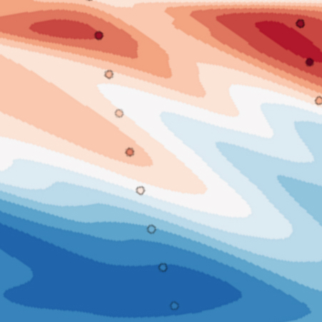

Code

|
Congressional Accountability
Exploring vote history of US Senators and House of Reps using the Propublica Congress API, and DW-NOMINATE. Jupyter Notebook Ideological Polarization of Congress JFK-2014 |

|
Federal Fund Fisnder
Ingesting several decades of NSF Awarded Grants into SQLite for dashboards, wordclouds, and network graphs. Find your next advisor, faculty member, consultant, or campus with PI funding history, topic analysis, and University profiles. Jupyter Notebook Plot.ly 1 2 d3.js Network Graph (a welcome mistake) |
|  |
Quantifying Multi-Decadal Biogeochemical Trends in Antarctica's Western Penninsula
Exploring 15 years of inorganic nutrient measurements along the Palmer LTER reigonal sample grid with interannual depth profiles, Mixed Layer Depth and Net Community Production. Jupyter Notebook |

|
Exploring Variability of Arctic Ocean Circulation and Hydrology using Isotopic ratios and Salinity
Leveraging 60 years of data from the NASA GISS Global Seawater Oxygen-18 database to distinguish reigonal water masses through freshwater origins and mixing. Jupyter Notebook AGU Poster d3.js map |
Technology will always adopt the biases and limitations of its creators.
The Quotes section generates a rando quote to reconcile.